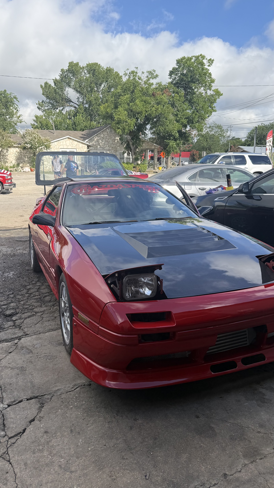
Pintura y carrocería
Reparación de colisiones, paneles y acabados de pintura pensados para verse de fábrica — no parches de apuro.
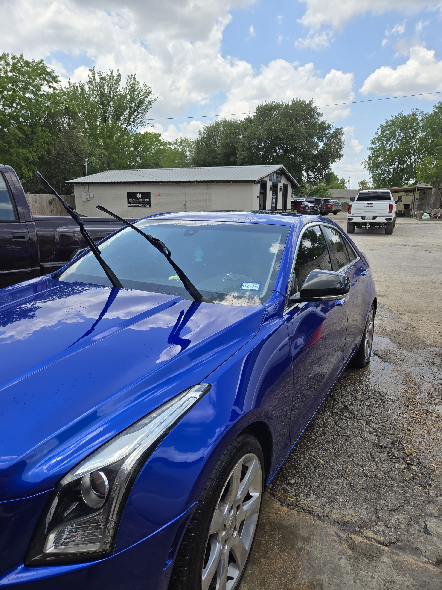
Pintura y carrocería · Mecánica completa · Desde 2005
Mendoza's Auto Repair en Seguin — trabajo de colisiones y pintura del que se puede sentir orgulloso, más el servicio mecánico que mantiene cada sistema en orden. Un taller. Un equipo.
Lo que hacemos
Desde un color bien emparejado hasta lo que hay bajo el cofre — todo en un solo lugar para que no tenga que ir de taller en taller.

Reparación de colisiones, paneles y acabados de pintura pensados para verse de fábrica — no parches de apuro.
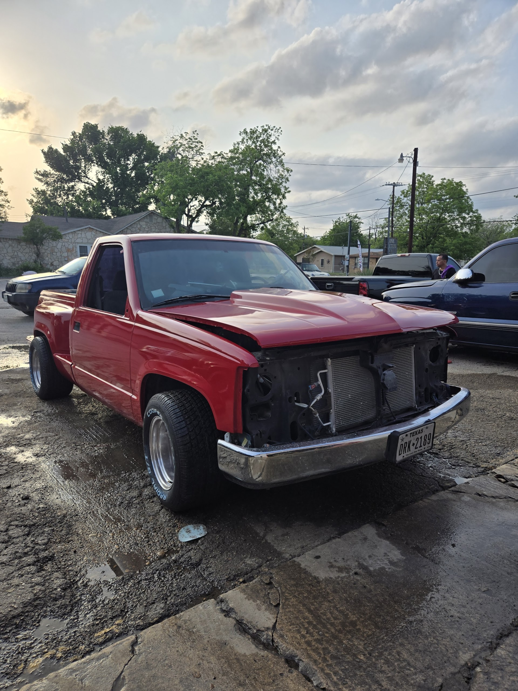
Restauramos estructura y apariencia después de un impacto. Comunicación clara sobre alcance, partes y tiempo.
Mejor flujo de aire para el motor y el interior.
Diagnóstico, servicio y A/C confiable otra vez.
Escaneo y detección correcta de la luz de check engine.
Prueba, reemplazo y arranque firme.
Balatas, discos y revisión del sistema para frenar con confianza.
Cableado, carga, luces y fallas de módulos.
Desde fugas y sensores hasta trabajo más profundo.
Mantenimiento que protege el motor a largo plazo.
Manejo más suave, control y seguridad.
Servicio y reparación para cambios firmes y confiables.
Trabajo real
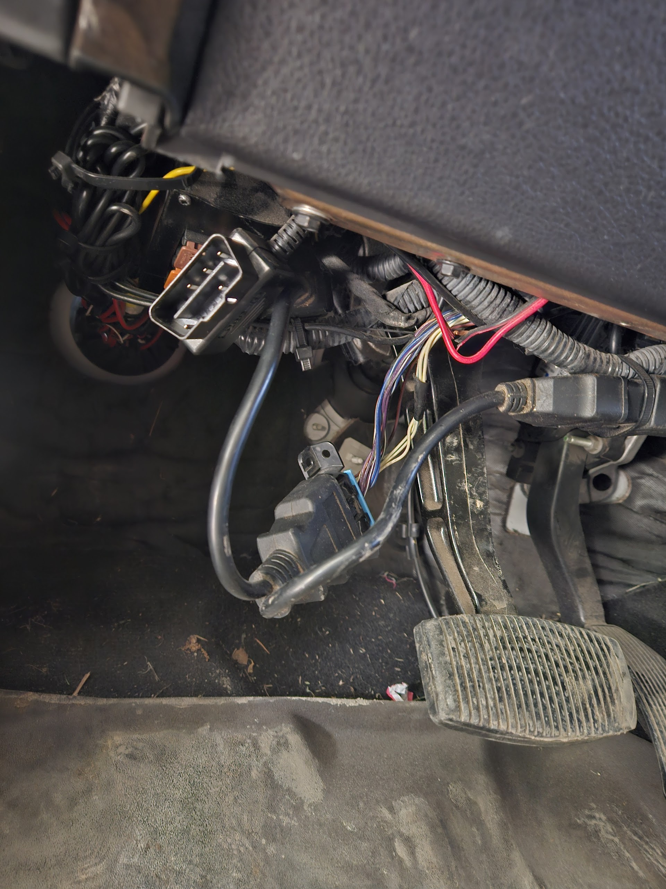
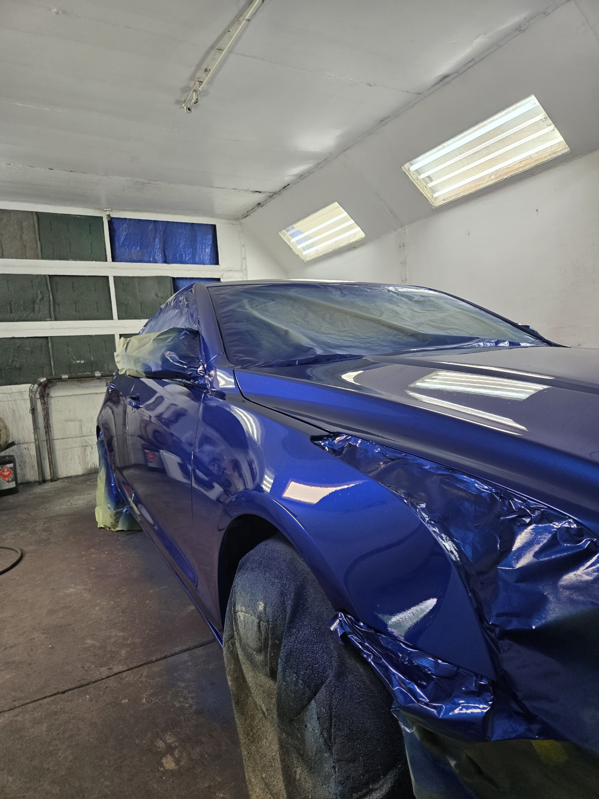
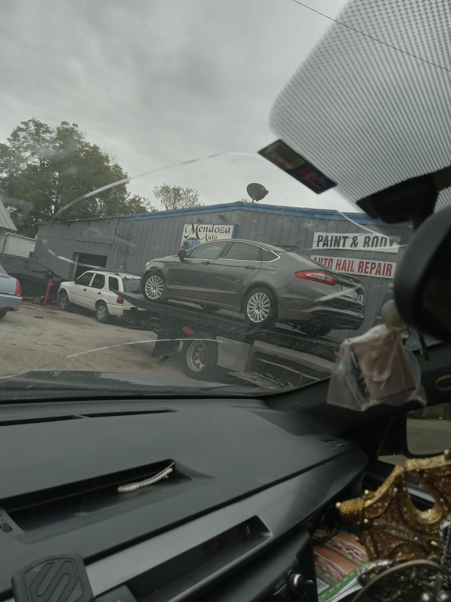
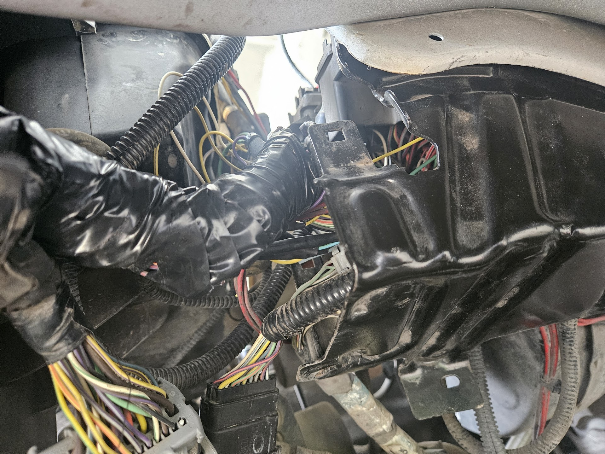
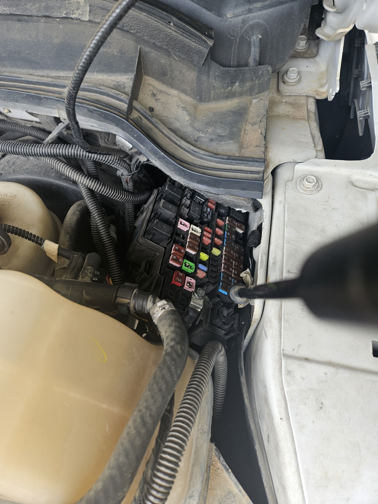
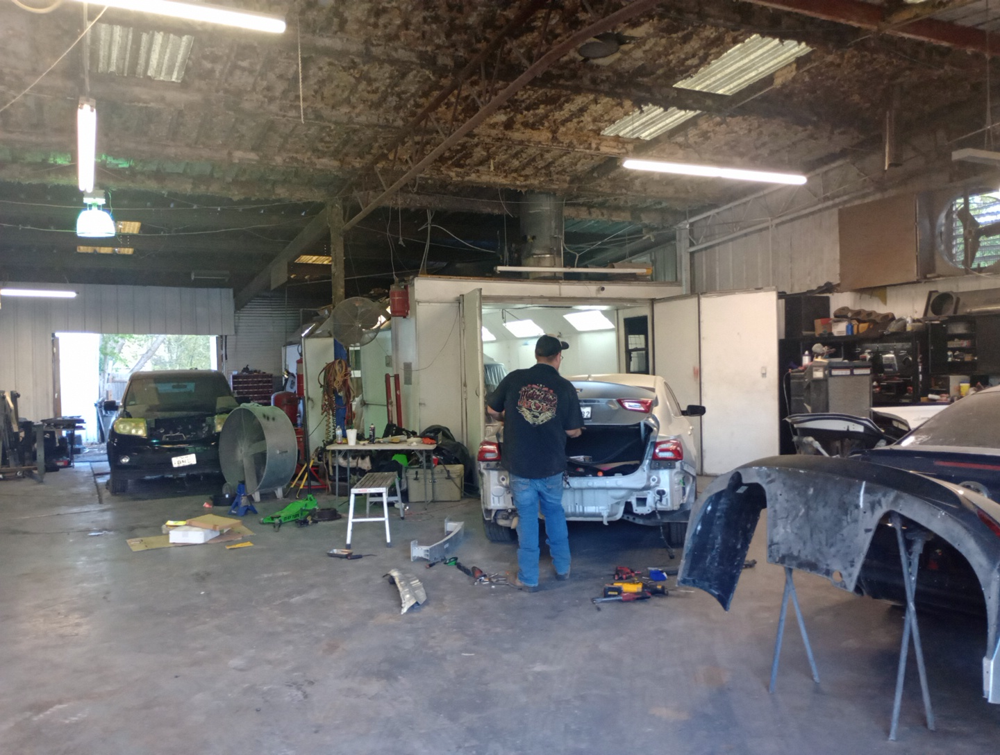
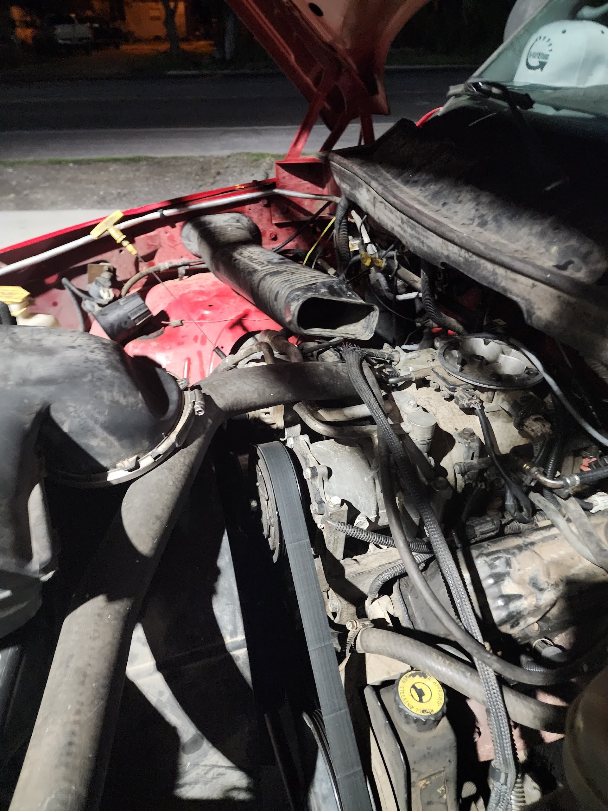
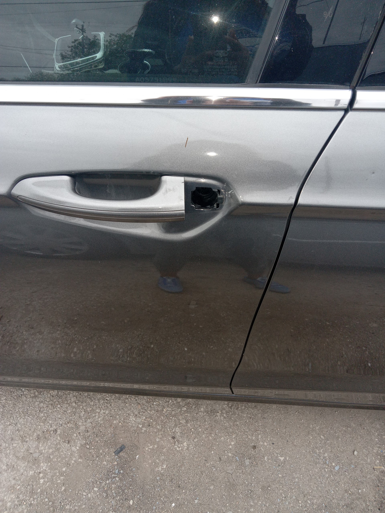
Por qué Mendoza's
Desde 2005, Mendoza's Auto Repair atiende a conductores de Seguin que quieren carrocería y mecánica en manos de gente que se enorgullece del acabado — y del funcionamiento.
Seguin, TX
Llame para pintura, carrocería, colisiones o servicio mecánico. Con gusto le explicamos opciones — incluyendo formas de ayudar con deducibles.